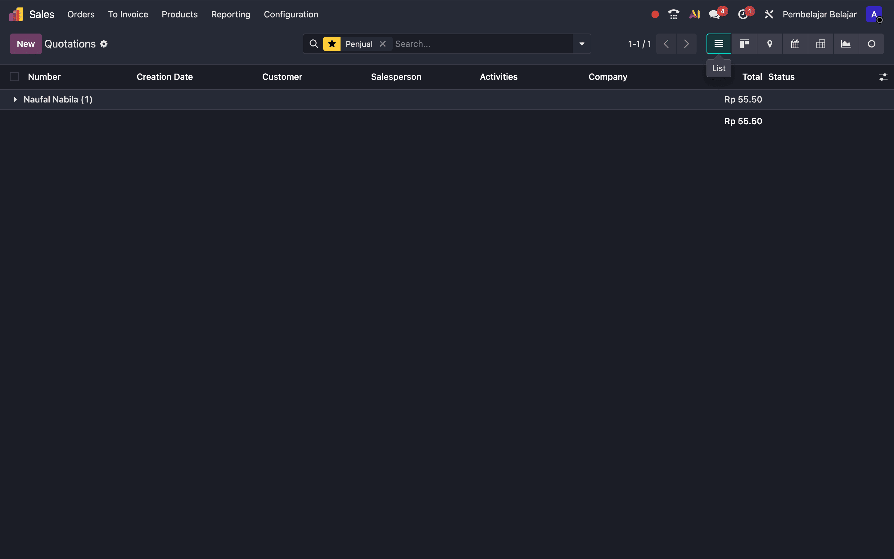
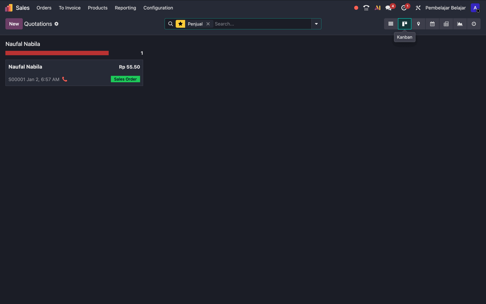
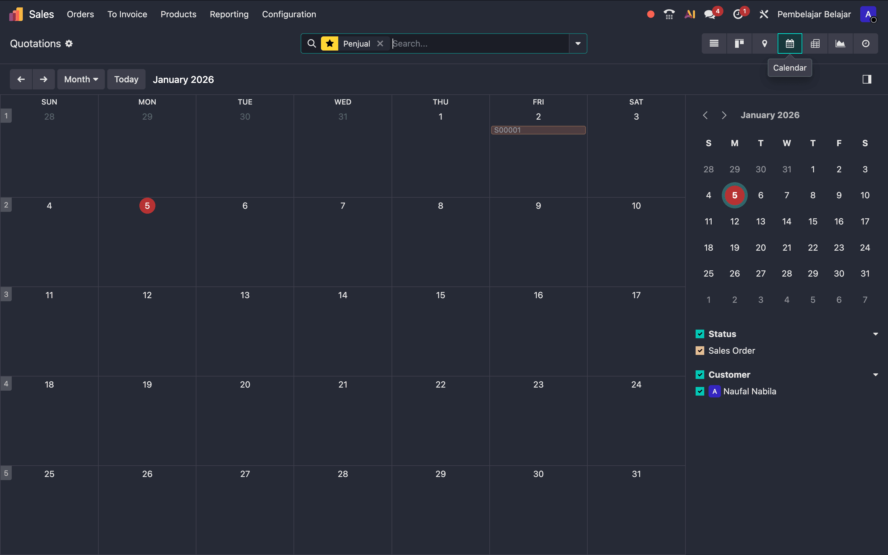
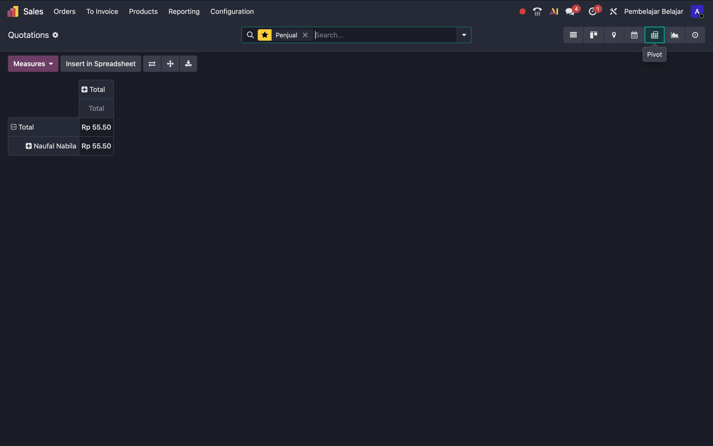
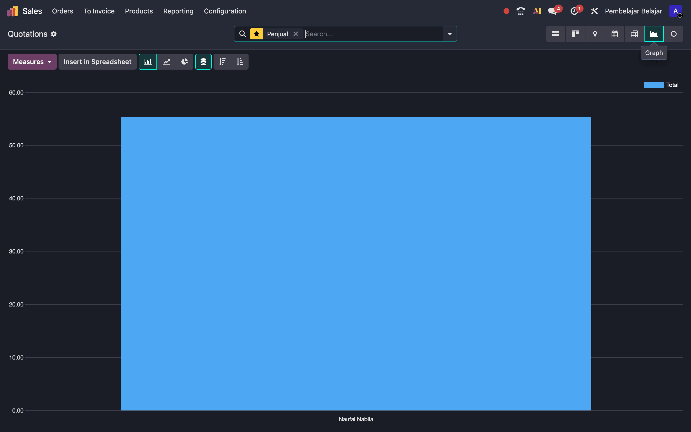
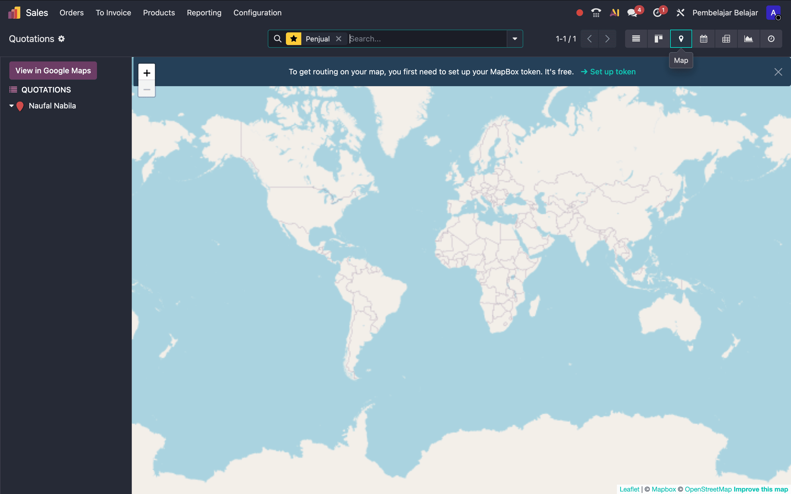

Odoo memiliki berbagai cara untuk menampilkan data. Navigasi ini ada
di pojok kanan atas.
A. List View (Daftar)
Tampilan tabel stkitar. Cocok untuk melihat detail banyak data
sekaligus.

📸 Screenshot: Tampilan List View (Tabel)
B. Kanban View (Kartu)
Tampilan visual kartu. Coba Drag & Drop kartu
pesanan dari kolom Admin ke kolom Budi Sales (pastikan Group By
Salesperson aktif).

📸 Screenshot: Tampilan Kanban (Kartu-kartu)
C. Calendar View
Melihat jadwal dokumen berdasarkan tanggal.

📸 Screenshot: Tampilan Kalender
D. Pivot View
Tabel analisis data (seperti Excel Pivot) untuk laporan ringkasan.

📸 Screenshot: Tampilan Pivot Table
E. Graph View
Visualisasi data (Bar, Line, Pie Chart).

📸 Screenshot: Tampilan Grafik
F. Activity View (Aktivitas)
Melihat jadwal tugas (To-Do, Email, Call).
🔴 Merah: Terlambat
| 🟢 Hijau: Akan datang | 🟡 Kuning: Hari ini
 📸 Screenshot: Tampilan Activity (Grid warna-warni)
📸 Screenshot: Tampilan Activity (Grid warna-warni)
G. Map View (Peta)
Menampilkan lokasi partner di peta.

📸 Screenshot: Tampilan Peta dengan pin lokasi